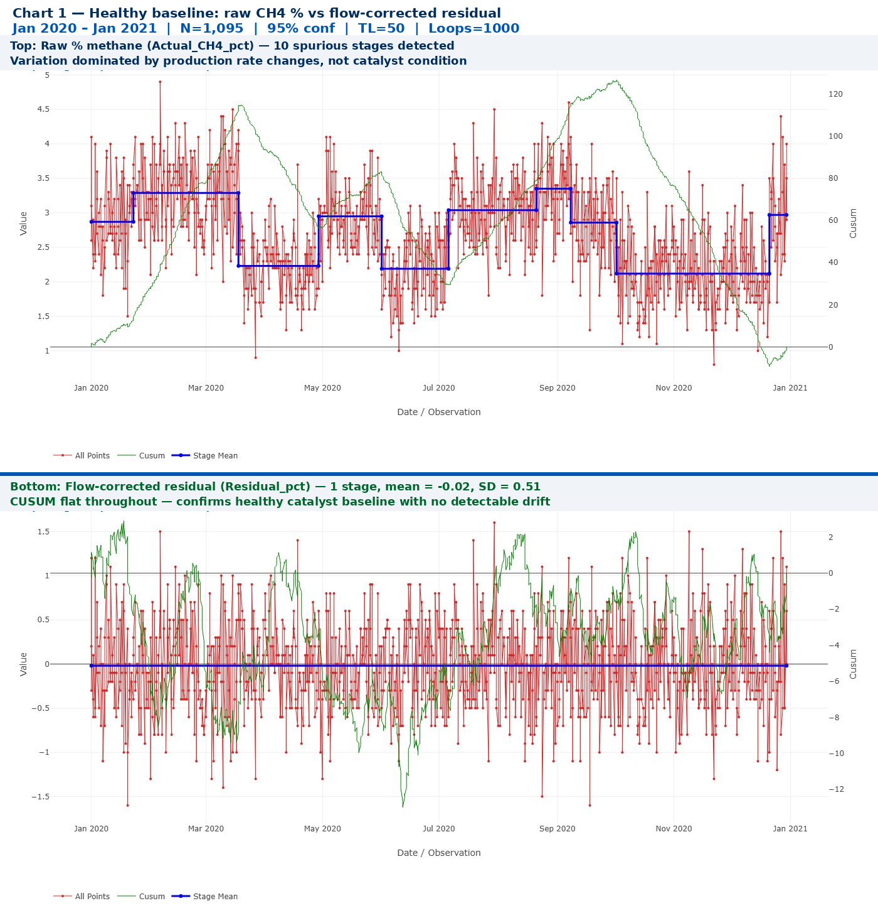
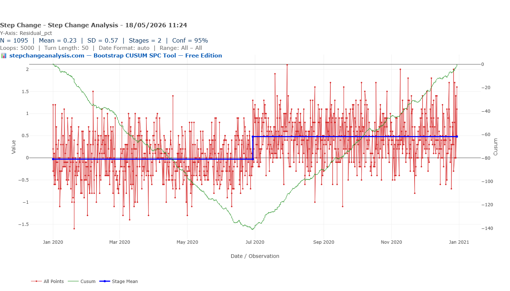
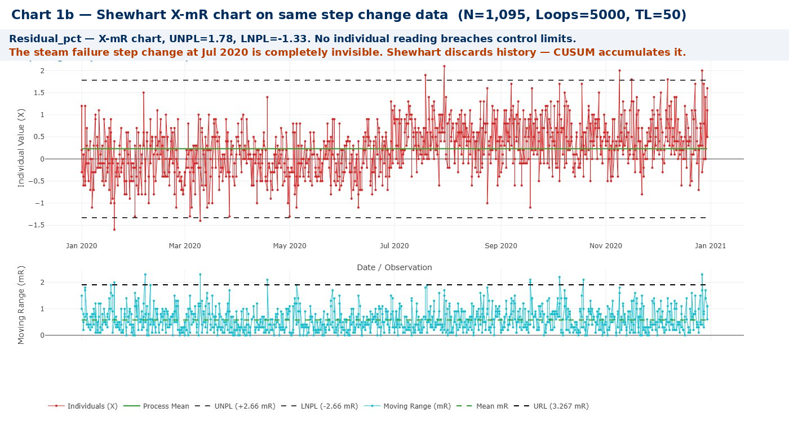
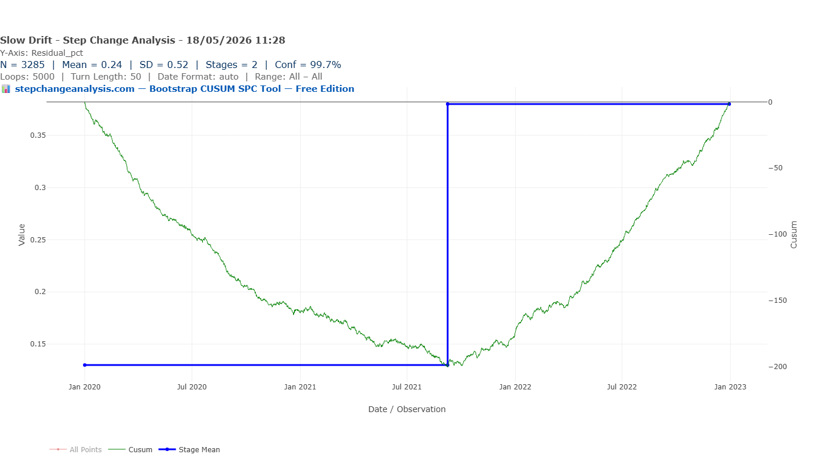
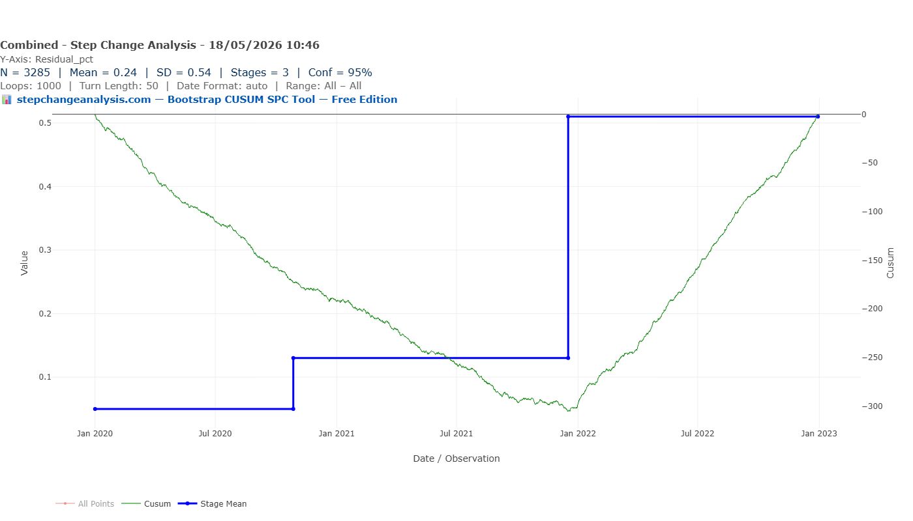
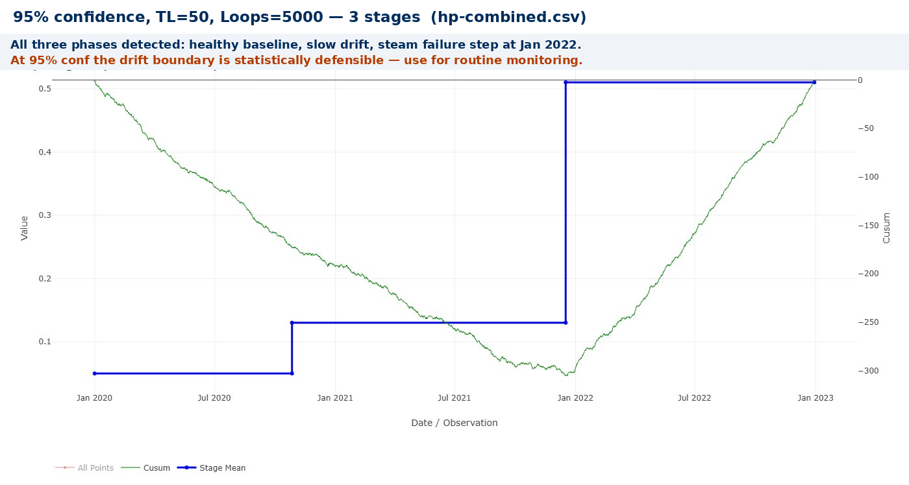
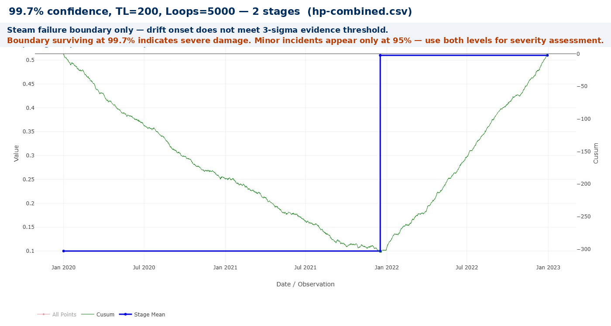

The Hydrogen Plant Problem
A 17% efficiency gap led to a practical monitoring lesson: adjust for operating conditions before looking for a change.
The plant story comes from my experience in the 1970s. Every chart and CSV below uses generated data, not historical plant readings. They demonstrate a method; they do not reconstruct or validate the original events.
The problem nobody could explain
In the mid-1970s, I managed two nominally identical naphtha steam-reforming units. Unit 2 consumed 17% more naphtha per tonne of hydrogen than Unit 1, although both appeared to be running normally. Neither the operating team nor the technical advisers could explain the gap.
A reference book supplied a clue: a low steam-to-naphtha ratio during a steam or power failure can permanently damage the nickel catalyst. Several such failures had occurred. We replaced Unit 2’s catalyst during a planned shutdown; on restart, its consumption returned to Unit 1’s level. That was strong practical evidence for the catalyst explanation, though it did not establish the exact history of the damage.
The next question was how to notice deterioration earlier, rather than wait for another costly efficiency gap.
Measure the departure from expected performance
Outlet methane was a useful indicator of incomplete reforming, but it also varied with production rate. A higher reading could mean higher load rather than poorer catalyst performance. We needed a residual: actual methane minus the amount expected at that load.
- Establish a healthy reference. Use verified healthy operation across the relevant load range; check instruments and other operating conditions.
- Calculate each residual. In this illustrative dataset:
Expected CH₄ (%) = 2.0 + (Flowrate% − 30) × (1.5 / 70)
Residual (percentage points) = Actual CH₄ (%) − Expected CH₄ (%)The formula is an example, not a transferable plant model. Temperature, pressure, feedstock and instrument changes may also need accounting for. A poorly specified reference produces misleading residuals.

Use accumulation to make persistent departures visible
A running sum against a fixed healthy reference can accumulate small persistent deviations that are difficult to judge from single readings. In the original monitoring arrangement, one reading per shift and weekly summaries could be maintained with pen and paper.
Do not confuse two uses of CUSUM. Prospective monitoring needs a fixed reference, decision limits and an agreed response. The retrospective Bootstrap CUSUM charts below are centred on the whole-series mean and fit possible stage boundaries. Their estimated change dates are not evidence of when an online alarm would have sounded.

A CUSUM slope shows departures from its reference, not a direct rate of deterioration. A whole-series-centred CUSUM returns approximately to zero by construction; that return does not mean the plant recovered. A chart can prompt inspection, but cannot identify catalyst damage on its own.
Additional worked charts: drift, combined change and sensitivity





Make monitoring useful to operators
- Define the response before an alarm. Check the analyser and operating conditions, review steam and power events, and arrange engineering investigation as appropriate.
- Use corroborating evidence. Furnace tube temperatures, consumption and maintenance history may help. Related signals are not necessarily independent, and coincident signals do not prove a cause.
- Validate locally. Evaluate false alarms and detection performance on suitable data. A bootstrap confidence setting is not the probability that damage occurred, an online false-alarm rate or a measure of damage severity.
- Keep the baseline honest. Verify healthy operation; collecting a year or two of data does not itself establish health. Recheck the model when conditions change.
The transferable lesson is not “use this formula everywhere.” It is compare actual with expected performance under comparable conditions, then connect a signal to investigation and action.
How to take this further
- Right Measures — choose a measure that separates changing load from changing performance.
- Right Problem — investigate why the departure occurred.
- Right Intervention — match the response to the evidence, then evaluate it.
For the complete framework, read Why Improvement Programmes Fail.
Open the StepChange Analyzer → Use it to explore a question, not to substitute a chart signal for an explanation.
Downloads and method notes
All four CSVs are simulated. They are suitable for learning and testing software behaviour, not estimating this plant’s actual losses or validating a monitoring system.
- Healthy-baseline CSV
- Sudden-change CSV
- Slow-drift CSV
- Combined-scenario CSV
- Revised one-page summary PDF
Method background: Page (1954), Continuous inspection schemes; Taylor (2000), Change-point analysis; Efron & Tibshirani (1993), An Introduction to the Bootstrap. These references do not validate this implementation. Existing chart images are retained unchanged; their original settings are not operating recommendations.